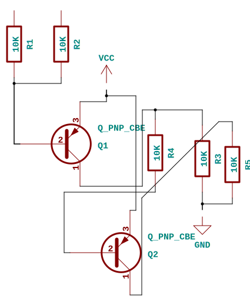
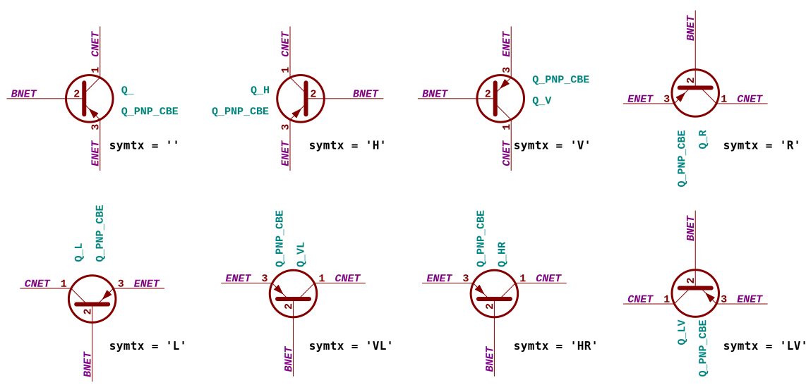

TL;DR
Never use a lousy schematic editor again! SKiDL is a simple module that lets you describe electronic circuits using Python. The resulting Python program outputs a netlist that a PCB layout tool uses to create a finished circuit board.
Contents
- TL;DR
- Introduction
- Installation
- Basic Usage
- Accessing SKiDL
- Finding Parts
- Instantiating Parts
- Connecting Pins
- Checking for Errors
- Generating a Netlist or PCB
- Going Deeper
- Basic SKiDL Objects: Parts, Pins, Nets, Buses
- Creating SKiDL Objects
- Finding SKiDL Objects
- Copying SKiDL Objects
- Accessing Part Pins and Bus Lines
- Making Connections
- Making Serial, Parallel, and Tee Networks
- Aliases
- Units Within Parts
- Part Fields
- Hierarchy
- Interfaces
- Libraries
- Doodads
- Going Really Deep
- Circuit Objects
- Generating a Schematic
- DOT Graphs
- SVG Schematics
- Converting Existing Designs to SKiDL
- SPICE Simulations
Introduction
SKiDL is a module that allows you to compactly describe the interconnection of electronic circuits and components using Python. The resulting Python program performs electrical rules checking for common mistakes and outputs a netlist that serves as input to a PCB layout tool.
First, let's look at a "normal" design flow in KiCad:

Here, you start off in a schematic editor (for KiCad, that's EESCHEMA) and draw a schematic. From that, EESCHEMA generates a netlist file that lists what components are used and how their pins are interconnected. Then you'll use a PCB layout tool (like KiCad's PCBNEW) to arrange the part footprints and draw the wire traces that connect the pins as specified in the netlist. Once that is done, PCBNEW outputs a set of Gerber files that are sent to a PCB fabricator who will create a physical PCB and ship it to you. Then you'll post a picture of them on Twitter and promptly dump them in a drawer for a few years because you got bored with the project.
In the SKiDL-based design flow, you use a text editor to create a Python code file that employs the SKiDL library to describe interconnections of components. This code file is executed by a Python interpreter and a netlist file is output. From there, the design flow is identical to the schematic-based one (including dumping the PCBs in a drawer).

So, why would you want to use SKiDL? Here are some of the features SKiDL brings to electronic design:
- Requires only a text editor and Python.
- Has a powerful, flexible syntax (because it is Python).
- Permits compact descriptions of electronic circuits (think about not tracing signals through a multi-page schematic).
- Allows textual descriptions of electronic circuits (think about using
diffand git for circuits). - Performs electrical rules checking (ERC) for common mistakes (e.g., unconnected device I/O pins).
- Supports linear / hierarchical / mixed descriptions of electronic designs.
- Fosters design reuse (think about using PyPi and Github to distribute electronic designs).
- Makes possible the creation of smart circuit modules whose behavior / structure are changed parametrically (think about filters whose component values are automatically adjusted based on your desired cutoff frequency).
- Can work with any ECAD tool (only two methods are needed: one for reading the part libraries and another for outputing the correct netlist format).
- Takes advantage of all the benefits of the Python ecosystem (because it is Python).
- Free software: MIT license.
- Open source: https://github.com/devbisme/skidl
As a very simple example, the SKiDL program below describes a circuit that takes an input voltage, divides it by three, and outputs it:
from skidl import *
# Create input & output voltages and ground reference.
vin, vout, gnd = Net('VI'), Net('VO'), Net('GND')
# Create two resistors.
r1, r2 = 2 * Part("Device", 'R', TEMPLATE, footprint='Resistor_SMD.pretty:R_0805_2012Metric')
r1.value = '1K' # Set upper resistor value.
r2.value = '500' # Set lower resistor value.
# Connect the nets and resistors.
vin += r1[1] # Connect the input to the upper resistor.
gnd += r2[2] # Connect the lower resistor to ground.
vout += r1[2], r2[1] # Output comes from the connection of the two resistors.
# Or you could do it with a single line of code:
# vin && r1 && vout && r2 && gnd
# Output the netlist to a file.
generate_netlist()
And this is the netlist output that is passed to PCBNEW to
do the PCB layout:
(export (version D)
(design
(source "/media/devb/Main/devbisme/KiCad/tools/skidl/skidl/circuit.py")
(date "04/21/2021 10:43 AM")
(tool "SKiDL (0.0.31)"))
(components
(comp (ref R1)
(value 1K)
(footprint Resistor_SMD.pretty:R_0805_2012Metric)
(fields
(field (name F0) R)
(field (name F1) R))
(libsource (lib Device) (part R))
(sheetpath (names /top/15380172755090775681) (tstamps /top/15380172755090775681)))
(comp (ref R2)
(value 500)
(footprint Resistor_SMD.pretty:R_0805_2012Metric)
(fields
(field (name F0) R)
(field (name F1) R))
(libsource (lib Device) (part R))
(sheetpath (names /top/3019747424092552385) (tstamps /top/3019747424092552385))))
(nets
(net (code 1) (name GND)
(node (ref R2) (pin 2)))
(net (code 2) (name VI)
(node (ref R1) (pin 1)))
(net (code 3) (name VO)
(node (ref R1) (pin 2))
(node (ref R2) (pin 1))))
)
Installation
SKiDL is pure Python so it's easy to install:
$ pip install skidl
To give SKiDL some part libraries to work with, you'll also need to install KiCad. Then, you'll need to set an environment variable so SKiDL can find the libraries. For Windows, do this:
set KICAD_SYMBOL_DIR=C:\Program Files\KiCad\share\kicad\kicad-symbols
And for linux-type OSes, define the environment variable in your .bashrc like so:
export KICAD_SYMBOL_DIR="/usr/share/kicad/library"
These paths are OS-dependent, so launch KiCAD and click Preferences->Configure Paths
to reveal the needed paths.
Basic Usage
This is the minimum that you need to know to design electronic circuitry using SKiDL:
- How to get access to SKiDL.
- How to find and instantiate a component (or part).
- How to connect pins of the parts to each other using nets.
- How to run an ERC on the circuit.
- How to generate a netlist for the circuit that serves as input to a PCB layout tool.
I'll demonstrate these steps using SKiDL in an interactive Python session, but normally the statements that are shown would be entered into a file and executed as a Python script.
Accessing SKiDL
To use skidl in a project, just place the following at the top of your file:
import skidl
But for this tutorial, I'll just import everything:
from skidl import *
Finding Parts
Command-line Searching
SKiDL provides a convenience function for searching for parts called
(naturally) search.
For example, if you need an operational amplifier, then the following command would
pull up a long list of likely candidates:
>>> search('opamp')
Amplifier_Audio.lib: OPA1622 (High-Fidelity, Bipolar-Input, Audio Operational Amplifier, VSON-10)
Amplifier_Audio.lib: LM386 (Low Voltage Audio Power Amplifier, DIP-8/SOIC-8/SSOP-8)
Amplifier_Difference.lib: LM733CH (Single Differential Amplifier, TO-5-10)
Amplifier_Difference.lib: LM733H (Single Differential Amplifier, TO-5-10)
Amplifier_Difference.lib: LM733CN (Single Differential Amplifier, DIP-14)
Amplifier_Instrumentation.lib: INA326 (Precision, Rail-to-Rail I/O Instrumentation Amplifier, MSOP-8 package)
Amplifier_Instrumentation.lib: INA327 (Precision, Rail-to-Rail I/O Instrumentation Amplifier, MSOP-10 package)
Amplifier_Instrumentation.lib: INA129 (Precision, Low Power Instrumentation Amplifier G = 1 + 49.4kOhm/Rg, DIP-8/SOIC-8)
Amplifier_Instrumentation.lib: INA128 (Precision, Low Power Instrumentation Amplifier G = 1 + 49.4kOhm/Rg, DIP-8/SOIC-8)
Amplifier_Operational.lib: OPA842xD (Single rail-to-rail input/output 8 MHz operational amplifiers, SOIC-8)
Amplifier_Operational.lib: OPA188xxD (Single rail-to-rail input/output 8 MHz operational amplifiers, SOIC-8)
Amplifier_Operational.lib: OPA855xDSG (1.8 GHz Unity-Gain Bandwidth FET Input Amplifier, WSON-8)
Amplifier_Operational.lib: SA5534 (Single Low-Noise Operational Amplifiers, DIP-8/SOIC-8)
...
search accepts keywords and scans for them anywhere within the
name, description and keywords of all the parts in the library path.
(You can read more about how SKiDL handles libraries here.)
If you want search for an exact match, then use a regular expression like the following:
>>> search('^lm386$')
Amplifier_Audio.lib: LM386 (Low Voltage Audio Power Amplifier, DIP-8/SOIC-8/SSOP-8)
If you give search multiple terms, then it will find parts that contain all
those terms:
>>> search('opamp low-noise dip-8')
Amplifier_Operational.lib: AD797 (Single Low-Noise Operational Amplifiers, DIP-8/SOIC-8)
Amplifier_Operational.lib: LM101 (Single Low-Noise Operational Amplifiers, DIP-8/SOIC-8)
Amplifier_Operational.lib: LM301 (Single Low-Noise Operational Amplifiers, DIP-8/SOIC-8)
Amplifier_Operational.lib: LT1012 (Single Low-Noise Operational Amplifiers, DIP-8/SOIC-8)
Amplifier_Operational.lib: SA5534 (Single Low-Noise Operational Amplifiers, DIP-8/SOIC-8)
Amplifier_Operational.lib: NE5534 (Single Low-Noise Operational Amplifiers, DIP-8/SOIC-8)
Amplifier_Operational.lib: LM201 (Single Low-Noise Operational Amplifiers, DIP-8/SOIC-8)
You can also use the | character to find parts that contain at least one of a set
of choices:
>>> search('opamp (low-noise|dip-8)')
Amplifier_Audio.lib: LM386 (Low Voltage Audio Power Amplifier, DIP-8/SOIC-8/SSOP-8)
Amplifier_Operational.lib: TLV2371P (Rail-to-Rail Input/Output Operational Amplifier, PDIP-8)
Amplifier_Operational.lib: MAX4239ASA (Ultra-Low Offset/Drift, Low-Noise, Precision Amplifiers, SOIC-8)
Amplifier_Operational.lib: LM4250 (Programmable Operational Amplifier, DIP-8/SOIC-8)
Amplifier_Operational.lib: LF256 (Single JFET-Input Operational Amplifiers, DIP-8/SOIC-8)
Amplifier_Operational.lib: MAX4239AUT (Ultra-Low Offset/Drift, Low-Noise, Precision Amplifiers, SOT-23-6)
Amplifier_Operational.lib: LM6361 (Single High Speed Operational Amplifier, DIP-8/SOIC-8)
Amplifier_Operational.lib: LF257 (Single JFET-Input Operational Amplifiers, DIP-8/SOIC-8)
Amplifier_Operational.lib: AD8603 (Zero-Drift, Precision, Low-Noise, Rail-to-Rail Output, 36-V Operational Amplifier, TSOT-23-5)
...
If you need to search for a string containing spaces, just enclose it in quotes:
>>> search('opamp "high performance"')
Amplifier_Operational.lib: OP77 (Single SoundPlus High Performance Audio Operational Amplifiers, DIP-8/SOIC-8)
Amplifier_Operational.lib: LT1363 (Single SoundPlus High Performance Audio Operational Amplifiers, DIP-8/SOIC-8)
Amplifier_Operational.lib: OP07 (Single SoundPlus High Performance Audio Operational Amplifiers, DIP-8/SOIC-8)
Amplifier_Operational.lib: OPA134 (Single SoundPlus High Performance Audio Operational Amplifiers, DIP-8/SOIC-8)
Once you have the part name and library, you can see the part's pin numbers, names
and their functions using the show function:
>>> show('Amplifier_Audio', 'lm386')
LM386 (): Low Voltage Audio Power Amplifier, DIP-8/SOIC-8/SSOP-8
Pin None/1/GAIN/INPUT
Pin None/2/-/INPUT
Pin None/3/+/INPUT
Pin None/4/GND/POWER-IN
Pin None/5/~/OUTPUT
Pin None/6/V+/POWER-IN
Pin None/7/BYPASS/INPUT
Pin None/8/GAIN/INPUT
show looks for exact matches of the part name in a library, so the following
command raises an error:
>>> show('Amplifier_Audio', 'lm38')
ERROR: Unable to find part lm38 in library linear.
In addition to searching for parts, you can also search for footprints using the
search_footprints command. It works similarly to the search command:
>>> search_footprints('QFN-48')
Package_DFN_QFN: QFN-48-1EP_5x5mm_P0.35mm_EP3.7x3.7mm ("QFN, 48 Pin (https://www.espressif.com/sites/default/files/documentation/esp32_datasheet_en.pdf#page=38), generated with kicad-footprint-generator ipc_noLead_generator.py" - "QFN NoLead")
Package_DFN_QFN: QFN-48-1EP_5x5mm_P0.35mm_EP3.7x3.7mm_ThermalVias ("QFN, 48 Pin (https://www.espressif.com/sites/default/files/documentation/esp32_datasheet_en.pdf#page=38), generated with kicad-footprint-generator ipc_noLead_generator.py" - "QFN NoLead")
Package_DFN_QFN: QFN-48-1EP_6x6mm_P0.4mm_EP4.2x4.2mm ("QFN, 48 Pin (https://static.dev.sifive.com/SiFive-FE310-G000-datasheet-v1p5.pdf#page=20), generated with kicad-footprint-generator ipc_noLead_generator.py" - "QFN NoLead")
Package_DFN_QFN: QFN-48-1EP_6x6mm_P0.4mm_EP4.2x4.2mm_ThermalVias ("QFN, 48 Pin (https://static.dev.sifive.com/SiFive-FE310-G000-datasheet-v1p5.pdf#page=20), generated with kicad-footprint-generator ipc_noLead_generator.py" - "QFN NoLead")
...
Zyc: A GUI Search Tool
If you want to avoid using command-line tools,
zyc lets you search for parts and footprints using a GUI.
You can read more about it here.
Instantiating Parts
You instantiate a part using its name and the library that contains it:
>>> resistor = Part('Device','R')
You can customize the resistor by setting its value attribute:
>>> resistor.value = '1K'
>>> resistor.value
'1K'
It's also possible to set attributes when creating a part:
>>> resistor = Part('Device', 'R', value='2K')
>>> resistor.value
'2K'
The ref attribute holds the part reference. It's set automatically
when you create the part:
>>> resistor.ref
'R1'
Since this was the first resistor we created, it has the honor of being named R1.
But you can easily change that:
>>> resistor.ref = 'R5'
>>> resistor.ref
'R5'
Now what happens if we create another resistor?:
>>> another_res = Part('Device','R')
>>> another_res.ref
'R1'
Since the R1 reference wasn't being used, the new resistor got it.
What if we tried renaming the first resistor back to R1:
>>> resistor.ref = 'R1'
>>> resistor.ref
'R1_1'
Since the R1 reference was already taken, SKiDL tried to give us
something close to what we wanted.
SKiDL won't let different parts have the same reference because
that would be confusing.
The ref, value, and footprint attributes are necessary when generating
a final netlist for your circuit.
Since a part is stored in a Python object, you can add any
other attributes you want using setattr().
But if you want those attributes to be passed on within the netlist, then you
should probably add them as part fields.
Connecting Pins
Parts are great, but not very useful if they aren't connected to anything. The connections between parts are called nets (think of them as wires) and every net has one or more part pins attached to it. SKiDL makes it easy to create nets and connect pins to them. To demonstrate, let's build the voltage divider circuit shown in the introduction.
First, start by creating two resistors (note that I've also added the
footprint attribute that describes the physical package for the resistors):
>>> rup = Part("Device", 'R', value='1K', footprint='Resistor_SMD.pretty:R_0805_2012Metric')
>>> rlow = Part("Device", 'R', value='500', footprint='Resistor_SMD.pretty:R_0805_2012Metric')
>>> rup.ref, rlow.ref
('R1', 'R2')
>>> rup.value, rlow.value
('1K', '500')
To bring the voltage that will be divided into the circuit, let's create a net:
>>> v_in = Net('VIN')
>>> v_in.name
'VIN'
Now attach the net to one of the pins of the rup resistor
(resistors are bidirectional which means it doesn't matter which pin, so pick pin 1):
>>> rup[1] += v_in
You can verify that the net is attached to pin 1 of the resistor like this:
>>> rup[1].net
VIN: Pin R1/1/~/PASSIVE
Next, create a ground reference net and attach it to rlow:
>>> gnd = Net('GND')
>>> rlow[1] += gnd
>>> rlow[1].net
GND: Pin R2/1/~/PASSIVE
Finally, the divided voltage has to come out of the circuit on a net. This can be done in several ways. The first way is to define the output net and then attach the unconnected pins of both resistors to it:
>>> v_out = Net('VO')
>>> v_out += rup[2], rlow[2]
>>> rup[2].net, rlow[2].net
(VO: Pin R1/2/~/PASSIVE, Pin R2/2/~/PASSIVE, VO: Pin R1/2/~/PASSIVE, Pin R2/2/~/PASSIVE)
An alternate method is to connect the resistors and then attach their junction to the output net:
>>> rup[2] += rlow[2]
>>> v_out = Net('VO')
>>> v_out += rlow[2]
>>> rup[2].net, rlow[2].net
(VO: Pin R1/2/~/PASSIVE, Pin R2/2/~/PASSIVE, VO: Pin R1/2/~/PASSIVE, Pin R2/2/~/PASSIVE)
Either way works! Sometimes pin-to-pin connections are easier when you're just wiring two devices together, while the pin-to-net connection method excels when three or more pins have a common connection.
With more complicated parts, the code is often clearer if you use pin names instead of numbers. Check out this section for how to do that.
Checking for Errors
Once the parts are wired together, you can do simple electrical rules checking like this:
>>> ERC()
2 warnings found during ERC.
0 errors found during ERC.
Since this is an interactive session, the ERC warnings and errors are stored
in the file skidl.erc. (Normally, your SKiDL circuit description is stored
as a Python script such as my_circuit.py and the ERC() function will
dump its messages to my_circuit.erc.)
The ERC messages are:
WARNING: Only one pin (PASSIVE pin 1/~ of R/R1) attached to net VIN.
WARNING: Only one pin (PASSIVE pin 1/~ of R/R2) attached to net GND.
These messages are generated because the VIN and GND nets each have only
a single pin on them and this usually indicates a problem.
But it's OK for this simple example, so the ERC can be turned off for
these two nets to prevent the spurious messages:
>>> v_in.do_erc = False
>>> gnd.do_erc = False
>>> ERC()
No ERC errors or warnings found.
Generating a Netlist or PCB
The end goal of using SKiDL is to generate a netlist that can be used with a layout tool to generate a PCB. The netlist is output as follows:
>>> generate_netlist()
Like the ERC output, the netlist shown below is stored in the file skidl.net.
But if your SKiDL circuit description is in the my_circuit.py file,
then the netlist will be stored in my_circuit.net.
(export (version D)
(design
(source "/media/devb/Main/devbisme/KiCad/tools/skidl/skidl/circuit.py")
(date "04/22/2021 01:50 PM")
(tool "SKiDL (0.0.31dev)"))
(components
(comp (ref R1)
(value 1K)
(footprint Resistor_SMD.pretty:R_0805_2012Metric)
(fields
(field (name F0) R)
(field (name F1) R))
(libsource (lib Device) (part R))
(sheetpath (names /top/16316864629425674383) (tstamps /top/16316864629425674383)))
(comp (ref R2)
(value 500)
(footprint Resistor_SMD.pretty:R_0805_2012Metric)
(fields
(field (name F0) R)
(field (name F1) R))
(libsource (lib Device) (part R))
(sheetpath (names /top/8136002053123588309) (tstamps /top/8136002053123588309))))
(nets
(net (code 1) (name GND)
(node (ref R2) (pin 1)))
(net (code 2) (name VIN)
(node (ref R1) (pin 1)))
(net (code 3) (name VO)
(node (ref R1) (pin 2))
(node (ref R2) (pin 2))))
)
You can also generate the netlist in XML format:
>>> generate_xml()
This is useful in a KiCad environment where the XML file is used as the input to BOM-generation tools.
If you're designing with KiCad and want to skip some steps, you can go directly to a PCB like this:
>>> generate_pcb()`
This outputs a .kicad_pcb file that you can open in PCBNEW without
having to import the netlist.
(Note that you will need to have KiCad installed since generate_pcb uses its
pcbnew Python library to create the PCB.)
Going Deeper
This section will talk about more advanced SKiDL features that make designing complicated circuits easier.
Basic SKiDL Objects: Parts, Pins, Nets, Buses
SKiDL uses four types of objects to represent a circuit: Part, Pin,
Net, and Bus.
The Part object represents an electronic component, which SKiDL thinks of as a simple
bag of Pin objects with a few other attributes attached
(like the part number, name, reference, value, footprint, etc.).
The Pin object represents a terminal that brings an electronic signal into
and out of the part. Each Pin object store information on which part it belongs to
and which nets it is attached to.
A Net object is kind of like a Part: it's a simple bag of pins.
But unlike a part, pins can be added to a net when a pin on some part is attached
or when it is merged with another net.
Finally, a Bus is just a collection of multiple Net objects.
A bus of a certain width can be created from a number of existing nets,
newly-created nets, or both.
Creating SKiDL Objects
Here's the most common way to create a part in your circuit:
my_part = Part('some_library', 'some_part_name')
When this is processed, the current directory will be checked for a file
called some_library.lib or some_library.kicad_sym
which will be opened and scanned for a part with the
name some_part_name. If the file is not found or it doesn't contain
the requested part, then the process will be repeated using KiCad's default
library directory.
(You can change SKiDL's library search by changing the list of directories
stored in the skidl.lib_search_paths_kicad list.)
You're not restricted to using only the current directory or the KiCad default directory to search for parts. You can also search any file for a part by using a full file name:
my_part = Part('C:/my_libs/my_great_parts.lib', 'my_super_regulator')
You're also not restricted to getting an exact match on the part name: you can use a regular expression instead. For example, this will find a part with "358" anywhere in a part name or alias:
my_part = Part('Amplifier_Audio', '.*386.*')
If the regular expression matches more than one part, then you'll only get the first match and a warning that multiple parts were found.
Once you have the part, you can set its attributes as was described previously.
Creating nets and buses is straightforward:
my_net = Net() # An unnamed net.
my_other_net = Net('Fred') # A named net.
my_bus = Bus('bus_name', 8) # Named, byte-wide bus with nets bus_name0, bus_name1, ...
anon_bus = Bus(4) # Four-bit bus with an automatically-assigned name.
As with parts, SKiDL will alter the name you assign if it collides with another net or bus having the same name.
You can also create a bus by combining existing nets, buses, or the pins of parts in any combination:
my_part = Part('Amplifier_Audio', 'LM386')
a_net = Net()
b_net = Net()
bus_nets = Bus('net_bus', a_net, b_net) # A 2-bit bus from nets.
bus_pins = Bus('pin_bus', my_part[1], my_part[3]) # A 2-bit bus from pins.
bus_buses = Bus('bus_bus', my_bus) # An 8-bit bus.
bus_combo = Bus('mongrel', 8, a_net, my_bus, my_part[2]) # 8+1+8+1 = 18-bit bus.
You can also build a bus incrementally by inserting or extending it with widths, nets, buses or pins:
bus = Bus('A', 8) # Eight-bit bus.
bus.insert(4, Bus('I', 3)) # Insert 3-bit bus before bus line bus[4].
bus.extend(5, Pin(), Net()) # Extend bus with another 5-bit bus, a pin, and a net.
And finally, you can create a Pin object although you'll probably never do this
unless you're building a Part object from scratch:
>>> p = Pin(num=1, name='my_pin', func=Pin.TRISTATE)
>>> p
Pin ???/1/my_pin/TRISTATE
Finding SKiDL Objects
If you want to access a bus, net, or part that's already been created,
use the get() class method:
n = Net.get('Fred') # Find the existing Net object named 'Fred'.
b = Bus.get('A') # Find the existing Bus object named 'A'.
p = Part.get('AS6C1616') # Find all parts with this part name.
If a net or bus with the exact name is found (no wild-card searches using regular expressions are allowed),
then that SKiDL object is returned.
Otherwise, None is returned.
For parts, the search is performed using string matching on part names,
references (e.g., R4), and aliases.
In addition, regular expression matching is used to search within the
part descriptions, so you could search for all parts with "ram" in their description.
If you want to access a particular bus or net and
create it if it doesn't already exist, then use the fetch() class method:
n = Net.fetch('Fred') # Find the existing Net object named 'Fred' or create it if not found.
b = Bus.fetch('A', 8) # Find the existing Bus object named 'A' or create it if not found.
Note that with the Bus.fetch() method, you also have to provide the arguments to
build the bus (such as its width) in case it doesn't exist.
Copying SKiDL Objects
Instead of creating a SKiDL object from scratch, sometimes it's easier to just copy an existing object. Here are some examples of creating a resistor and then making some copies of it:
>>> r1 = Part('Device', 'R', value=500) # Add a resistor to the circuit.
>>> r2 = r1.copy() # Make a single copy of the resistor.
>>> r2_lst = r1.copy(1) # Make a single copy, but return it in a list.
>>> r3 = r1.copy(value='1K') # Make a single copy, but give it a different value.
>>> r4 = r1(value='1K') # You can also call the object directly to make copies.
>>> r5, r6, r7 = r1(3, value='1K') # Make three copies of a 1-KOhm resistor.
>>> r8, r9, r10 = r1(value=[110,220,330]) # Make three copies, each with a different value.
>>> r11, r12 = 2 * r1 # Make copies using the '*' operator.
>>> r13, r14 = 2 * r1(value='1K') # This actually makes three 1-KOhm resistors!!!
The last example demonstrates an unexpected result when using the * operator:
- The resistor is called with a value of 1-KOhm, creating a copy of the resistor with that value of resistance.
- The
*operator is applied to the resistor copy, returning two more 1-KOhm resistors. Now the original resistor has been copied three times. - The two new resistors returned by the
*operator are assigned tor13andr14.
After these operations, the second and third copies can be referenced, but any reference to the first copy has been lost so it just floats around, unconnected to anything, only to raise errors later when the ERC is run.
In some cases it's clearer to create parts by copying a template part that doesn't actually get included in the netlist for the circuitry:
>>> rt = Part('Device', 'R', dest=TEMPLATE) # Create a resistor just for copying. It's not added to the circuit.
>>> r1, r2, r3 = rt(3, value='1K') # Make three 1-KOhm copies that become part of the actual circuitry.
Accessing Part Pins and Bus Lines
Accessing Part Pins
You can access the pins on a part or the individual nets of a bus using numbers, slices, strings, and regular expressions, either singly or in any combination.
Suppose you have a PIC10 processor in a six-pin package:
>>> pic10 = Part('MCU_Microchip_PIC10', 'pic10f220-iot')
>>> pic10
PIC10F220-IOT (PIC10F222-IOT): 512W Flash, 24B SRAM, SOT-23-6
Pin U3/1/GP0/BIDIRECTIONAL
Pin U3/2/VSS/POWER-IN
Pin U3/3/GP1/BIDIRECTIONAL
Pin U3/4/GP2/BIDIRECTIONAL
Pin U3/5/VDD/POWER-IN
Pin U3/6/GP3/INPUT
The most natural way to access one of its pins is to give the pin number in brackets:
>>> pic10[3]
Pin U1/3/GP1/BIDIRECTIONAL
(If you have a part in a BGA package with pins numbers like C11, then
you'll have to enter the pin number as a quoted string like 'C11'.)
You can also get several pins at once in a list:
>>> pic10[3,1,6]
[Pin U1/3/GP1/BIDIRECTIONAL, Pin U1/1/GP0/BIDIRECTIONAL, Pin U1/6/GP3/INPUT]
You can even use Python slice notation:
>>> pic10[2:4] # Get pins 2 through 4.
[Pin U1/2/VSS/POWER-IN, Pin U1/3/GP1/BIDIRECTIONAL, Pin U1/4/GP2/BIDIRECTIONAL]
>>> pic10[4:2] # Get pins 4 through 2.
[Pin U1/4/GP2/BIDIRECTIONAL, Pin U1/3/GP1/BIDIRECTIONAL, Pin U1/2/VSS/POWER-IN]
>>> pic10[:] # Get all the pins.
[Pin U1/1/GP0/BIDIRECTIONAL,
Pin U1/2/VSS/POWER-IN,
Pin U1/3/GP1/BIDIRECTIONAL,
Pin U1/4/GP2/BIDIRECTIONAL,
Pin U1/5/VDD/POWER-IN,
Pin U1/6/GP3/INPUT]
(It's important to note that the slice notation used by SKiDL for parts is slightly
different than standard Python. In Python, a slice n:m would fetch indices
n, n+1, ..., m-1. With SKiDL, it actually fetches all the
way up to the last number: n, n+1, ..., m-1, m.
The reason for doing this is that most electronics designers are used to
the bounds on a slice including both endpoints. Perhaps it is a mistake to
do it this way. We'll see...)
In addition to the bracket notation, you can also get a single pin using an attribute name
that begins with a 'p' followed by the pin number:
>>> pic10.p2
Pin U1/2/VSS/POWER-IN
Instead of pin numbers, sometimes it makes the design intent more clear to access pins by their names. For example, it's more obvious that a voltage supply net is being attached to the power pin of the processor when it's expressed like this:
pic10['VDD'] += Net('supply_5V')
Like pin numbers, pin names can also be used as attributes to access the pin:
>>> pic10.VDD
Pin U1/5/VDD/POWER-IN
You can use multiple names to get more than one pin:
>>> pic10['VDD','VSS']
[Pin U1/5/VDD/POWER-IN, Pin U1/2/VSS/POWER-IN]
It can be tedious and error prone entering all the quote marks if you're accessing many pin names. SKiDL lets you enter a single, comma or space-delimited string of pin names:
>>> pic10['GP0 GP1 GP2']
[Pin U1/1/GP0/BIDIRECTIONAL, Pin U1/3/GP1/BIDIRECTIONAL, Pin U1/4/GP2/BIDIRECTIONAL]
Some parts have sequentially-numbered sets of pins like the address and data buses of a RAM. SKiDL lets you access these pins using a slice-like notation in a string like so:
>>> ram = Part('Memory_RAM', 'AS6C1616')
>>> ram['DQ[0:2]']
[Pin U2/29/DQ0/BIDIRECTIONAL, Pin U2/31/DQ1/BIDIRECTIONAL, Pin U2/33/DQ2/BIDIRECTIONAL]
Or you can access the pins in the reverse order:
>>> ram = Part('memory', 'sram_512ko')
>>> ram['DQ[2:0]']
[Pin U2/33/DQ2/BIDIRECTIONAL, Pin U2/31/DQ1/BIDIRECTIONAL, Pin U2/29/DQ0/BIDIRECTIONAL]
Some parts (like microcontrollers) have long pin names that list every function a pin
supports (e.g. GP1/AN1/ICSPCLK).
Employing the complete pin name is tedious to enter correctly and
obfuscates which particular function is being used.
SKiDL offers two ways to deal with this: 1) split the pin names into a set of shorter aliases, or
2) match pin names using regular expressions.
If a part has pin names where the subnames are separated by delimiters such as /,
then the subnames for each pin can be assigned as aliases:
>>> pic10[3].name = 'GP1/AN1/ICSPCLK' # Give pin 3 a long name.
>>> pic10[3].split_name('/') # Split pin 3 name into aliases.
>>> pic10.split_pin_names('/') # Split all pin names into aliases.
>>> pic10[3].aliases # Show aliases for pin 3.
{'AN1', 'GP1', 'ICSPCLK'}
>>> pic10['AN1'] += Net('analog1') # Connect a net using the pin alias.
>>> pic10.AN1 += Net('analog2') # Or access the alias thru an attribute.
You can also split the pin names when you create the part:
>>> pic10 = Part('MCU_Microchip_PIC10', 'pic10f220-iot', pin_splitters='/')
The other way to access a pin with a long name is to use a regular expression. You'll have to enable regular expression matching for a particular part (it's off by default), and you'll have to use an odd-looking expression, but here's how it's done:
>>> pic10[3].name = 'GP1/AN1/ICSPCLK'
>>> pic10.match_pin_regex = True # Enable regular expression matching.
>>> pic10['.*\/AN1\/.*] += Net('analog1) # I told you the expression was strange!
Since you can access pins by number or by name using strings or regular expressions, it's worth discussing how SKiDL decides which one to select. When given a pin index, SKiDL stops searching and returns the matching pins as soon as one of the following conditions succeeds:
- One or more pin numbers match the index.
- One or more pin aliases match the index using standard string matching.
- One or more pin names match the index using standard string matching.
- One or more pin aliases match the index using regular expression matching.
- One or more pin names match the index using regular expression matching.
Since SKiDL prioritizes pin number matches over name matches,
what happens when you use a name that is the same as the number of another pin?
For example, a memory chip in a BGA would have pin numbers A1, A2, A3, ... but might
also have address pins named A1, A2, A3, ... .
In order to specifically target either pin numbers or names,
SKiDL provides the p and n part attributes:
ram['A1, A2, A3'] # Selects pin numbers A1, A2 and A3 if the part is a BGA.
ram.p['A1, A2, A3'] # Use the p attribute to specifically select pin numbers A1, A2 and A3.
ram.n['A1, A2, A3'] # Use the n attribute to specifically select pin names A1, A2 and A3.
Part objects also provide the get_pins() function which can select pins in even more ways.
For example, this would get every bidirectional pin of the processor:
>>> pic10.get_pins(func=Pin.BIDIR)
[Pin U1/1/GP0/BIDIRECTIONAL, Pin U1/3/GP1/BIDIRECTIONAL, Pin U1/4/GP2/BIDIRECTIONAL]
You can access part pins algorithmically in a loop like this:
for p in pic10.get_pins():
<do something with p>
Or do the same thing using a Part object as an iterator:
for p in pic10:
<do something with p>
Accessing Bus Lines
Accessing the individual lines of a bus works similarly to accessing part pins:
>>> a = Net('NET_A') # Create a named net.
>>> b = Bus('BUS_B', 4, a) # Create a five-bit bus.
>>> b
BUS_B:
BUS_B0: # Note how the individual lines of the bus are named.
BUS_B1:
BUS_B2:
BUS_B3:
NET_A: # The last net retains its original name.
>>> b[0] # Get the first line of the bus.
BUS_B0:
>>> b[2,4] # Get the second and fourth bus lines.
[BUS_B2: , NET_A: ]
>>> b[3:0] # Get the first four bus lines in reverse order.
[BUS_B3: , BUS_B2: , BUS_B1: , BUS_B0: ]
>>> b[-1] # Get the last bus line.
NET_A:
>>> b['BUS_B.*'] # Get all the bus lines except the last one.
[BUS_B0: , BUS_B1: , BUS_B2: , BUS_B3: ]
>>> b['NET_A'] # Get the last bus line.
NET_A:
>>> for line in b: # Access lines in bus using bus as an iterator.
...: print(line)
...:
BUS_B0:
BUS_B1:
BUS_B2:
BUS_B3:
NET_A:
Making Connections
Pins, nets, parts and buses can all be connected together in various ways, but the primary rule of SKiDL connections is:
The
+=operator is the only way to make connections!
At times you'll mistakenly try to make connections using the
assignment operator (=). In many cases, SKiDL warns you if you do that,
but there are situations where it can't (because
Python is a general-purpose programming language where
assignment is a necessary operation).
So remember the primary rule!
After the primary rule, the next thing to remember is that SKiDL's main purpose is creating netlists. To that end, it handles four basic, connection operations:
Net-to-Net: Connecting one net to another merges the pins on both nets into a single, larger net.
Pin-to-Net: A pin is connected to a net, adding it to the list of pins connected to that net. If the pin is already attached to other nets, then those nets are merged with this net.
Net-to-Pin: This is the same as doing a pin-to-net connection.
Pin-to-Pin: A net is created and both pins are attached to it. If one or both pins are already connected to other nets, then those nets are merged with the newly-created.
For each type of connection operation, there are three variants based on the number of things being connected:
One-to-One: This is the most frequent type of connection, for example, connecting one pin to another or connecting a pin to a net.
One-to-Many: This mainly occurs when multiple pins are connected to the same net, like when multiple ground pins of a chip are connected to the circuit ground net.
Many-to-Many: This usually involves bus connections to a part, such as connecting a bus to the data or address pins of a processor. For this variant, there must be the same number of things to connect in each set, e.g. you can't connect three pins to four nets.
As a first example, let's connect a net to a pin on a part:
>>> pic10 = Part('MCU_Microchip_PIC10', 'pic10f220-iot') # Get a part.
>>> io = Net('IO_NET') # Create a net.
>>> pic10.GP0] += io # Connect the net to a part pin.
>>> io # Show the pins connected to the net.
IO_NET: Pin U5/1/GP0/BIDIRECTIONAL
You can do the same operation in reverse by connecting the part pin to the net with the same result:
>>> pic10 = Part('MCU_Microchip_PIC10', 'pic10f220-iot')
>>> io = Net('IO_NET')
>>> io += pic10*GP0 # Connect a part pin to the net.
>>> io
IO_NET_1: Pin U6/1/GP0/BIDIRECTIONAL
You can also connect a pin directly to another pin.
In this case, an implicit net will be created between the pins that you can
access using the net attribute of either part pin:
>>> pic10.GP1 += pic10.GP2 # Connect two pins together.
>>> pic10.GP1.net # Show the net connected to the pin.
N$1: Pin U6/3/GP1/BIDIRECTIONAL, Pin U6/4/GP2/BIDIRECTIONAL
>>> pic10.GP2.net # Show the net connected to the other pin. Same thing!
N$1: Pin U6/3/GP1/BIDIRECTIONAL, Pin U6/4/GP2/BIDIRECTIONAL
You can connect multiple pins, all at once:
>>> pic10 = Part('MCU_Microchip_PIC10', 'pic10f220-iot')
>>> pic10[1] += pic10[2,3,6]
>>> pic10[1].net
N$1: Pin U7/1/GP0/BIDIRECTIONAL, Pin U7/2/VSS/POWER-IN, Pin U7/3/GP1/BIDIRECTIONAL, Pin U7/6/GP3/INPUT
Or you can do it incrementally:
>>> pic10 = Part('MCU_Microchip_PIC10', 'pic10f220-iot')
>>> pic10[1] += pic10[2]
>>> pic10[1] += pic10[3]
>>> pic10[1] += pic10[6]
>>> pic10[1].net
N$1: Pin U8/1/GP0/BIDIRECTIONAL, Pin U8/2/VSS/POWER-IN, Pin U8/3/GP1/BIDIRECTIONAL, Pin U8/6/GP3/INPUT
If you connect pins on separate nets together, then all the pins are merged onto the same net:
>>> pic10 = Part('MCU_Microchip_PIC10', 'pic10f220-iot')
>>> pic10[1] += pic10[2] # Put pins 1 & 2 on one net.
>>> pic10[3] += pic10[4] # Put pins 3 & 4 on another net.
>>> pic10[1] += pic10[4] # Connect two pins from different nets.
>>> pic10[3].net # Now all the pins are on the same net!
N$9: Pin U9/1/GP0/BIDIRECTIONAL, Pin U9/2/VSS/POWER-IN, Pin U9/3/GP1/BIDIRECTIONAL, Pin U9/4/GP2/BIDIRECTIONAL
Here's an example of connecting a three-bit bus to three pins on a part:
>>> pic10 = Part('MCU_Microchip_PIC10', 'pic10f220-iot')
>>> b = Bus('GP', 3) # Create a 3-bit bus.
>>> pic10['GP2 GP1 GP0'] += b[2:0] # Connect bus to part pins, one-to-one.
>>> b
GP:
GP0: Pin U10/1/GP0/BIDIRECTIONAL
GP1: Pin U10/3/GP1/BIDIRECTIONAL
GP2: Pin U10/4/GP2/BIDIRECTIONAL
But SKiDL will warn you if there aren't the same number of things to connect on each side:
>>> pic10[4,3,1] += b[1:0] # Too few bus lines for the pins!
ERROR: Connection mismatch 3 != 2!
---------------------------------------------------------------------------
ValueError Traceback (most recent call last)
<ipython-input-83-48a1e46383fe> in <module>
----> 1 pic10[4,3,1] += b[1:0]
/media/devb/Main/devbisme/KiCad/tools/skidl/skidl/netpinlist.py in __iadd__(self, *nets_pins_buses)
60 if len(nets_pins) != len(self):
61 if Net in [type(item) for item in self] or len(nets_pins) > 1:
---> 62 log_and_raise(
63 logger,
64 ValueError,
/media/devb/Main/devbisme/KiCad/tools/skidl/skidl/utilities.py in log_and_raise(logger_in, exc_class, message)
785 def log_and_raise(logger_in, exc_class, message):
786 logger_in.error(message)
--> 787 raise exc_class(message)
788
789
ValueError: Connection mismatch 3 != 2!
Making Serial, Parallel, and Tee Networks
The previous section showed some general-purpose techniques for connecting parts, but SKiDL also has some specialized syntax for wiring two-pin components in parallel or serial. For example, here is a network of four resistors connected in series between power and ground:
vcc, gnd = Net('VCC'), Net('GND')
r1, r2, r3, r4 = Part('Device', 'R', dest=TEMPLATE) * 4
ser_ntwk = vcc & r1 & r2 & r3 & r4 & gnd
It's also possible to connect the resistors in parallel between power and ground:
par_ntwk = vcc & (r1 | r2 | r3 | r4) & gnd
Or you can do something like placing pairs of resistors in series and then paralleling those combinations like this:
combo_ntwk = vcc & ((r1 & r2) | (r3 & r4)) & gnd
The examples above work with non-polarized components, but what about parts like diodes? In that case, you have to specify the pins explicitly with the first pin connected to the preceding part and the second pin to the following part:
d1 = Part('Device', 'D')
polar_ntwk = vcc & r1 & d1['A,K'] & gnd # Diode anode connected to resistor and cathode to ground.
Explicitly listing the pins also lets you use multi-pin parts with networks. For example, here's an NPN-transistor amplifier:
q1 = Part('Device', 'Q_NPN_ECB')
ntwk_ce = vcc & r1 & q1['C,E'] & gnd # VCC through load resistor to collector and emitter attached to ground.
ntwk_b = r2 & q1['B'] # Resistor attached to base.
That's all well and good, but how do you connect to internal points in these networks where the interesting things are happening? For instance, how do you apply an input to the transistor circuit and then connect to the output? One way is by inserting nets inside the network:
inp, outp = Net('INPUT'), Net('OUTPUT')
ntwk_ce = vcc & r1 & outp & q1['C,E'] & gnd # Connect net outp to the junction of the resistor and transistor collector.
ntwk_b = inp & r2 & q1['B'] # Connect net inp to the resistor driving the transistor base.
After that's done, the inp and outp nets can be connected to other points in the circuit.
Not all networks are composed of parts in series or parallel, for example the
Pi matching network.
This can be described using the tee() function like so:
inp, outp, gnd = Net('INPUT'), Net('OUTPUT'), Net('GND')
l = Part('Device', 'L')
cs, cl = Part('Device', 'C', dest=TEMPLATE) * 2
pi_ntwk = inp & tee(cs & gnd) & l & tee(cl & gnd) & outp
The tee function takes any network as its argument and returns the first node of
that network to be connected into the higher-level network.
The network passed to tee can be arbitrarily complex, including any
combination of parts, &'s, |'s, and tee's.
Aliases
Aliases let you assign a more descriptive name to a part, pin, net, or bus without affecting the original name. This is most useful in assigning names to pins to describe their functions.
r = Part('Device', 'R')
r[1] += vcc # Connect one end of resistor to VCC net.
r[2].aliases += 'pullup' # Add the alias 'pullup' to the other end of the resistor.
uc['RESET'] += r['pullup'] # Connect the pullup pin to the reset pin of a microcontroller.
To see the assigned aliases, just use the aliases attribute:
>>> r = Part('Device', 'R')
>>> r[2].aliases += 'pullup'
>>> r[2].aliases += 'aklgjh' # Some nonsense alias.
>>> r[2].aliases
{'aklghj', 'pullup'}
Units Within Parts
Some components are comprised of smaller operational units. For example, an operational amplifier chip might contain two individual opamp units, each capable of operating on their own set of inputs and outputs.
Library parts may already have predefined units, but you can add them to any part. For example, a four-pin resistor network might contain two resistors: one attached between pins 1 and 4, and the other bewtween pins 2 and 3. Each resistor could be assigned to a unit as follows:
>>> rn = Part("Device", 'R_Pack02')
>>> rn.make_unit('A', 1, 4) # Make a unit called 'A' for the first resistor.
R_Pack02 (): 2 Resistor network, parallel topology, DIP package
Pin RN1/4/R1.2/PASSIVE
Pin RN1/1/R1.1/PASSIVE
>>> rn.make_unit('B', 2, 3) # Now make a unit called 'B' for the second resistor.
R_Pack02 (): 2 Resistor network, parallel topology, DIP package
Pin RN1/2/R2.1/PASSIVE
Pin RN1/3/R2.2/PASSIVE
Once the units are defined, you can use them just like any part:
>>> rn.unit['A'][1,4] += Net(), Net() # Connect resistor A to two nets.
>>> rn.unit['B'][2,3] += rn.unit['A'][1,4] # Connect resistor B in parallel with resistor A.
Now this isn't all that useful because you still have to remember which pins are assigned to each unit, and if you wanted to swap the resistors you would have to change the unit names and the pins numbers!. In order to get around this inconvenience, you could assign aliases to each pin like this:
>>> rn[1].aliases += 'L' # Alias 'L' of pin 1 on left-side of package.
>>> rn[4].aliases += 'R' # Alias 'R' of pin 4 on right-side of package.
>>> rn[2].aliases += 'L' # Alias 'L' of pin 2 on left-side.
>>> rn[3].aliases += 'R' # Alias 'R' of pin 3 on right-side.
Now the same connections can be made using the pin aliases:
>>> rn.unit['A']['L,R'] += Net(), Net() # Connect resistor A to two nets.
>>> rn.unit['B']['L,R'] += rn.unit['A']['L,R'] # Connect resistor B in parallel with resistor A.
In this case, if you wanted to swap the A and B resistors, you only need to change their unit labels. The pin aliases don't need to be altered.
If you find the unit[...] notation cumbersome, units can also be accessed by
using their names as attributes:
>>> rn.A['L,R'] += Net(), Net() # Connect resistor A to two nets.
>>> rn.B['L,R'] += rn.A['L,R'] # Connect resistor B in parallel with resistor A.
Part Fields
Parts typically have fields that store additional information such as
manufacturer identifiers.
Every Part object stores this information in a dictionary called fields:
>> lm35 = Part('Sensor_Temperature', 'LM35-D')
>> lm35.fields
{'F0': 'U',
'F1': 'LM35-D',
'F2': 'Package_SO:SOIC-8_3.9x4.9mm_P1.27mm',
'F3': ''}
>>> lm35.fields['F1']
'LM35-D'
Key/value pairs stored in fields will get exported in the netlist file when it is generated,
so this is the way to pass data to downstream tools like PCBNEW.
New fields can be added just by adding new keys and values to the fields dictionary.
Once a field has been added to the dictionary, it can also be accessed and changed
as a part attribute:
>>> lm35.fields['new_field'] = 'new value'
>>> lm35.new_field
'new value'
>>> lm35.new_field = 'another new value'
>>> lm35.new_field
'another new value'
Hierarchy
SKiDL supports two equivalent implementations of hierarchy: subcircuits and packages.
Subcircuits
SKiDL supports the encapsulation of parts, nets and buses into modules that can be replicated to reduce design effort, and can be used in other modules to create a functional hierarchy. It does this using Python's built-in machinery for defining and calling functions so there's almost nothing new to learn.
As an example, here's the voltage divider as a module:
from skidl import *
import sys
# Define a global resistor template.
r = Part('Device', 'R', footprint='Resistor_SMD.pretty:R_0805_2012Metric', dest=TEMPLATE)
# Define the voltage divider module. The @subcircuit decorator
# handles some SKiDL housekeeping that needs to be done.
@subcircuit
def vdiv(inp, outp):
"""Divide inp voltage by 3 and place it on outp net."""
inp & r(value='1K') & outp & r(value='500') & gnd
# Declare the input, output and ground nets.
input_net, output_net, gnd = Net('IN'), Net('OUT'), Net('GND')
# Instantiate the voltage divider and connect it to the input & output nets.
vdiv(input_net, output_net)
generate_netlist(file_=sys.stdout)
For the most part, vdiv is just a standard Python function:
it accepts inputs, it performs operations on them, and it could return
results (but in this case, it doesn't need to).
Other than the @subcircuit decorator that appears before the function definition,
vdiv is just a Python function and it can do anything that a Python function can do.
Here's the netlist that's generated:
(export (version D)
(design
(source "C:\TEMP\skidl tests\hier_example.py")
(date "04/20/2017 09:39 AM")
(tool "SKiDL (0.0.12)"))
(components
(comp (ref R1)
(value 1K)
(footprint Resistor_SMD.pretty:R_0805_2012Metric)
(fields
(field (name keywords) "r res resistor")
(field (name description) Resistor))
(libsource (lib device) (part R)))
(comp (ref R2)
(value 500)
(footprint Resistor_SMD.pretty:R_0805_2012Metric)
(fields
(field (name keywords) "r res resistor")
(field (name description) Resistor))
(libsource (lib device) (part R))))
(nets
(net (code 0) (name GND)
(node (ref R2) (pin 2)))
(net (code 1) (name IN)
(node (ref R1) (pin 1)))
(net (code 2) (name OUT)
(node (ref R1) (pin 2))
(node (ref R2) (pin 1))))
)
For an example of a multi-level hierarchy, the multi_vdiv module shown below
can use the vdiv module to divide a voltage multiple times:
from skidl import *
import sys
r = Part('Device', 'R', footprint='Resistor_SMD.pretty:R_0805_2012Metric', dest=TEMPLATE)
@subcircuit
def vdiv(inp, outp):
inp & r(value='1K') & outp & r(value='500') & gnd
input_net, output_net, gnd = Net('IN'), Net('OUT'), Net('GND')
@subcircuit
def multi_vdiv(repeat, inp, outp):
"""Divide inp voltage by (3 * repeat) and place it on outp net."""
for _ in range(repeat):
out_net = Net() # Create an output net for the current stage.
vdiv(inp, out_net) # Instantiate a divider stage.
inp = out_net # The output net becomes the input net for the next stage.
outp += out_net # Connect the output from the last stage to the module output net.
input_net, output_net, gnd = Net('IN'), Net('OUT'), Net('GND')
multi_vdiv(3, input_net, output_net) # Run the input through 3 voltage dividers.
generate_netlist(file_=sys.stdout)
(For the EE's out there: yes, I know cascading three simple voltage dividers will not multiplicatively scale the input voltage because of the input and output impedances of each stage! It's just the simplest example I could use to show hierarchy.)
Subcircuits can also be configurable (after all, they're just functions). The ratio of the voltage divider could be set with a parameter:
# Pass the division ratio as a parameter.
@subcircuit
def vdiv(inp, outp, ratio):
inp & r(value=1000) & outp & r(value=1000*ratio/(1-ratio)) & gnd
...
# Instantiate the voltage divider with a ratio of 1/3.
vdiv(inp, outp, ratio=0.33)
Packages
The @subcircuit decorator lets you create a hierarchical circuit where the
subcircuits are instantiated using function calls with arguments.
The @package decorator is an alternative that packages a subcircuit into
a part-like object with its own input and output pins that can be connected
to other components.
In essence, you've encapsulated a subcircuit into its own package with I/O pins.
from skidl import *
import sys
r = Part('Device', 'R', footprint='Resistor_SMD.pretty:R_0805_2012Metric', dest=TEMPLATE)
# Define the voltage divider module. The @package decorator
# creates an interface that acts like I/O pins.
@package
def vdiv(inp, outp):
inp & r(value='1K') & outp & r(value='500') & gnd
input_net, output_net, gnd = Net('IN'), Net('OUT'), Net('GND')
# Instantiate the voltage divider as a package.
divider = vdiv()
# Now connect the I/O pins of the instantiated package to the input & output nets.
divider.inp += input_net
divider.outp += output_net
generate_netlist(file_=sys.stdout)
Subcircuits defined with @package are also customizable via parameters:
from skidl import *
import sys
r = Part('Device', 'R', footprint='Resistor_SMD.pretty:R_0805_2012Metric', dest=TEMPLATE)
# Voltage divider with a parameterized division ratio.
@package
def vdiv(inp, outp, ratio):
inp & r(value=1000) & outp & r(value=1000*ratio/(1-ratio)) & gnd
input_net, output_net, gnd = Net('IN'), Net('OUT'), Net('GND')
# Instantiate the voltage divider with a ratio of 1/3.
divider = vdiv(ratio=1.0/3)
divider.inp += input_net
divider.outp += output_net
# You can also override the division ratio. Note that a standard
# assignment operator is used instead of += because ratio is not an I/O pin.
divider.ratio = 0.5
generate_netlist(file_=sys.stdout)
Interfaces
Passing nets between hierarchically-organized modules can lead to long
lists of arguments.
To make the code easier to write and understand, SKiDL supports interfaces
which are simply dictionaries that encapsulate a number of Bus, Net, or Pin objects.
For example, here is an interface for a memory:
mem_intfc = Interface(
rd = Net('MEM_RD#'),
wr = Net('MEM_WR#'),
addr = Bus('MEM_ADDR', 20),
data = Bus('MEM_DATA', 16)
)
Then this interface can be passed to a module that implements a RAM memory and a microcontroller that uses it:
mem_module(mem_intfc)
uc_module(clk, mem_intfc, io_intfc)
Inside the mem_module, the interface signals are connected to a RAM chip:
@subcircuit
def mem_module(intfc):
ram = Part('Memory_RAM', 'AS6C1616')
ram['A[0:19]'] += intfc.addr
ram['DQ[0:15]'] += intfc.data
ram['WE#'] += intfc.wr
ram['OE#'] += intfc['rd'] # Interface members are also accessible using []'s.
...
Libraries
As you've already seen, SKiDL gets its parts from part libraries.
By default, SKiDL finds the libraries provided by KiCad (using the KICAD_SYMBOL_DIR
environment variable), so if that's all you need then you're all set.
Currently, SKiDL supports the library formats for the following ECAD tools:
KICAD: KiCad schematic part libraries.SKIDL: Schematic parts stored as SKiDL/Python modules.
You can set the default library format you want to use in your SKiDL script like so:
set_default_tool(KICAD) # KiCad is the default library format.
set_default_tool(SKIDL) # Now SKiDL is the default library format.
You can select the directories where SKiDL looks for parts or footprints using the
lib_search_paths or footprint_search_paths dictionaries, respectively:
lib_search_paths[SKIDL] = ['.', '..', 'C:\\temp']
lib_search_paths[KICAD].append('C:\\my\\kicad\\libs')
You can convert a KiCad library into the SKiDL format by exporting it:
kicad_lib = SchLib("Device", tool=KICAD) # Open a KiCad library.
kicad_lib.export('my_skidl_lib') # Export it into a file in SKiDL format.
skidl_lib = SchLib('my_skidl_lib', tool=SKIDL) # Create a SKiDL library object from the new file.
if len(skidl_lib) == len(kicad_lib):
print('As expected, both libraries have the same number of parts!')
else:
print('Something went wrong!')
diode = Part(skidl_lib, 'D') # Instantiate a diode from the SKiDL library.
You can make ad-hoc libraries just by creating a SchLib object and adding Part objects to it:
my_lib = SchLib(name='my_lib') # Create an empty library object.
my_part = Part(name='R', tool=SKIDL, dest=TEMPLATE) # Create an empty part object template.
my_part.ref_prefix = 'R' # Set the part reference prefix.
my_part.description = 'resistor' # Set the part's description field.
my_part.keywords = 'res resistor' # Set the part's keywords.
my_part += Pin(num=1, func=Pin.PASSIVE) # Add a pin to the part.
my_part += Pin(num=2, func=Pin.PASSIVE) # Add another pin to the part.
my_lib += my_part # Add the part to the library.
new_resistor = Part(my_lib, 'R') # Instantiate the part from the library.
my_lib.export('my_lib') # Save the library in a file my_lib.py.
Always create a part intended for a library as a template so you don't inadvertently add it to the circuit netlist. Then set the part attributes and create and add pins to the part. Here are the most common attributes you'll want to set:
| Attribute | Meaning |
|---|---|
| name | A string containing the name of the part, e.g. 'LM35' for a temperature sensor. |
| ref_prefix | A string containing the prefix for this part's references, e.g. 'U' for ICs. |
| description | A string describing the part, e.g. 'temperature sensor'. |
| keywords | A string containing keywords about the part, e.g. 'sensor temperature IC'. |
When creating a pin, these are the attributes you'll want to set:
| Attribute | Meaning |
|---|---|
| num | A string or integer containing the pin number, e.g. 5 or 'A13'. |
| name | A string containing the name of the pin, e.g. 'CS'. |
| func | An identifier for the function of the pin. |
The pin function identifiers are as follows:
| Identifier | Pin Function |
|---|---|
| Pin.INPUT | Input pin. |
| Pin.OUTPUT | Output pin. |
| Pin.BIDIR | Bidirectional in/out pin. |
| Pin.TRISTATE | Output pin that goes into a high-impedance state when disabled. |
| Pin.PASSIVE | Pin on a passive component (like a resistor). |
| Pin.UNSPEC | Pin with an unspecified function. |
| Pin.PWRIN | Power input pin (either voltage supply or ground). |
| Pin.PWROUT | Power output pin (like the output of a voltage regulator). |
| Pin.OPENCOLL | Open-collector pin (pulls to ground but not to positive rail). |
| Pin.OPENEMIT | Open-emitter pin (pulls to positive rail but not to ground). |
| Pin.NOCONNECT | A pin that should be left unconnected. |
SKiDL will also create a library of all the parts used in your design whenever
you use the generate_netlist() function.
For example, if your SKiDL script is named my_design.py, then the parts instantiated
in that script will be stored as a SKiDL library in the file my_design_lib.py.
This can be useful if you're sending the design to someone who may not have all
the libraries you do.
Just send them my_design.py and my_design_lib.py and any parts not found
when they run the script will be fetched from the backup parts in the library.
Doodads
SKiDL has a few features that don't fit into any other category. Here they are.
No Connects
Sometimes you will use a part, but you won't use every pin. The ERC will complain about those unconnected pins:
>>> pic10 = Part('MCU_Microchip_PIC10', 'pic10f220-iot')
>>> ERC()
ERC WARNING: Unconnected pin: BIDIRECTIONAL pin 1/GP0 of PIC10F220-IOT/U1.
ERC WARNING: Unconnected pin: POWER-IN pin 2/VSS of PIC10F220-IOT/U1.
ERC WARNING: Unconnected pin: BIDIRECTIONAL pin 3/GP1 of PIC10F220-IOT/U1.
ERC WARNING: Unconnected pin: BIDIRECTIONAL pin 4/GP2 of PIC10F220-IOT/U1.
ERC WARNING: Unconnected pin: POWER-IN pin 5/VDD of PIC10F220-IOT/U1.
ERC WARNING: Unconnected pin: INPUT pin 6/GP3 of PIC10F220-IOT/U1.
6 warnings found during ERC.
0 errors found during ERC.
If you have pins that you intentionally want to leave unconnected, then
attach them to the special-purpose NC (no-connect) net and the warnings will
be supressed:
>>> pic10[1,3,4] += NC
>>> ERC()
ERC WARNING: Unconnected pin: POWER-IN pin 2/VSS of PIC10F220-IOT/U1.
ERC WARNING: Unconnected pin: POWER-IN pin 5/VDD of PIC10F220-IOT/U1.
ERC WARNING: Unconnected pin: INPUT pin 6/GP3 of PIC10F220-IOT/U1.
3 warnings found during ERC.
0 errors found during ERC.
In fact, if you have a part with many pins that are not going to be used,
you can start off by attaching all the pins to the NC net.
After that, you can attach the pins you're using to normal nets and they
will be removed from the NC net:
my_part[:] += NC # Connect every pin to NC net.
...
my_part[5] += Net() # Pin 5 is no longer unconnected.
The NC net is the only net for which this happens.
For all other nets, connecting two or more nets to the same pin
merges those nets and all the pins on them together.
Net and Pin Drive Levels
Certain parts have power pins that are required to be driven by a power supply net or else ERC warnings ensue. This condition is usually satisfied if the power pins are driven by the output of another part like a voltage regulator. But if the regulator output passes through something like a ferrite bead (to remove noise), then the filtered signal is no longer a supply net and an ERC warning is issued.
In order to satisfy the ERC, the drive strength of a net can be set manually
using its drive attribute. As a simple example, consider connecting
a net to the power supply input of a processor and then running
the ERC:
>>> pic10 = Part('MCU_Microchip_PIC10', 'pic10f220-iot')
>>> a = Net()
>>> pic10['VDD'] += a
>>> ERC()
...
ERC WARNING: Insufficient drive current on net N$1 for pin POWER-IN pin 5/VDD of PIC10F220-IOT/U1
...
To fix this issue, change the drive attribute of the net:
>>> pic10 = Part('MCU_Microchip_PIC10', 'pic10f220-iot')
>>> a = Net()
>>> pic10['VDD'] += a
>>> a.drive = POWER
>>> ERC()
...
(Insufficient drive warning is no longer present.)
...
You can set the drive attribute at any time to any defined level, but POWER
is probably the only setting you'll use.
For any net you create that supplies power to devices in your circuit,
you should probably set its drive attribute to POWER.
This is equivalent to attaching power flags to nets in some ECAD packages like KiCad.
You can also set the drive attribute of part pins to override their default drive level.
This can be useful when you are using an output pin of a part to power
another part.
>>> pic10_a = Part('MCU_Microchip_PIC10', 'pic10f220-iot')
>>> pic10_b = Part('MCU_Microchip_PIC10', 'pic10f220-iot')
>>> pic10_b['VDD'] += pic10_a[1] # Power pic10_b from output pin of pic10_a.
>>> ERC()
ERC WARNING: Insufficient drive current on net N$1 for pin POWER-IN pin 5/VDD of PIC10F220-IOT/U2
... (additional unconnected pin warnings) ...
>>> pic10_a[1].drive = POWER # Change drive level of pic10_a output pin.
>>> ERC()
... (Insufficient drive warning is gone.) ...
Pin, Net, Bus Equivalencies
Pins, nets, and buses can all be connected to one another in a number of ways. In order to make them as interchangeable as possible, some additional functions are defined for each object:
__bool__ and __nonzero__:
Each object will return True when used in a boolean operation.
This can be useful when trying to select an active connection from a set of
candidates using the or operator:
>>> a = Net('A')
>>> b = Bus('B', 8)
>>> c = Pin()
>>> d = a or b or c
>>> d
A:
>>> type(d)
<class 'skidl.Net.Net'>
Indexing:
Normally, indices can only be used with a Bus object to select one or more bus lines.
But Pin and Net objects can also be indexed as long as the index evaluates to zero:
>>> a = Net('A')
>>> c = Pin()
>>> a[0] += c[0]
WARNING: Attaching non-part Pin to a Net A.
>>> a[0] += c[1]
ERROR: Can't use a non-zero index for a pin.
Traceback (most recent call last):
File "<stdin>", line 1, in <module>
File "C:\devbisme\KiCad\tools\skidl\skidl\Pin.py", line 251, in __getitem__
raise Exception
Exception
Iterators:
In addition to supporting indexing, Pin, Net and Bus objects can be used
as iterators.
>>> bus = Bus('bus', 4)
>>> for line in bus:
...: print(line)
...:
bus0:
bus1:
bus2:
bus3:
Width:
Bus, Net, and Pin objects all support the width property.
For a Bus object, width returns the number of bus lines it contains.
For a Net or Pin object, width always returns 1.
>>> a = Net('A')
>>> b = Bus('B', 8)
>>> c = Pin()
>>> a.width
1
>>> b.width
8
>>> c.width
1
Selectively Supressing ERC Messages
Sometimes a portion of your circuit throws a lot of ERC warnings or errors even though you know it's correct. SKiDL provides flags that allow you to turn off the ERC for selected nets, pins, and parts like so:
my_net.do_erc = False # Turns of ERC for this particular net.
my_part[5].do_erc = False # Turns off ERC for this pin of this part.
my_part.do_erc = False # Turns off ERC for all the pins of this part.
Customizable ERC Using erc_assert()
SKiDL's default ERC will find commonplace design errors, but sometimes
you'll have special requirements.
The erc_assert function is used to check these.
from skidl import *
import sys
# Function to check the number of inputs on a net.
def get_fanout(net):
fanout = 0
for pin in net.get_pins():
if pin.func in (Pin.INPUT, Pin.BIDIR):
fanout += 1
return fanout
net1, net2 = Net('IN1'), Net('IN2')
# Place some assertions on the fanout of each net.
# Note that the assertions are passed as strings.
erc_assert('get_fanout(net1) < 5', 'failed on net1')
erc_assert('get_fanout(net2) < 5', 'failed on net2')
# Attach some pins to the nets.
net1 += Pin(func=Pin.OUTPUT)
net2 += Pin(func=Pin.OUTPUT)
net1 += Pin(func=Pin.INPUT) * 4 # This net passes the assertion.
net2 += Pin(func=Pin.INPUT) * 5 # This net fails because of too much fanout.
# When the ERC runs, it will also run any erc_assert statements.
ERC()
When you run this code, the ERC will output the following:
ERC ERROR: get_fanout(input_net2) < 5 failed on net2 in <ipython-input-114-5b71f80eb001>:16:<module>.
0 warnings found during ERC.
1 errors found during ERC.
You might ask: "Why not just use the standard Python assert statement?"
The reason is that an assert statement is evaluated as soon as it is encountered
and would give incorrect results if the nets or other circuit objects are not yet
completely defined.
But the statement passed to the erc_assert function isn't evaluated until all the
various parts have been connected and ERC() is called
(that's why the statement is passed as a string).
Note in the code above that when the erc_assert function is called, no pins
are even attached to the net1 or net2 nets, yet.
The erc_assert function just places the statements to be checked into a queue
that gets evaluated when ERC() is run.
Tags
If you don't assign part references (e.g., R1), SKiDL will do it automatically.
This saves effort on your part, but if you insert a new part into an existing design,
all the part references probably will change during the automatic renumbering.
If you already have a PCB layout that associates the footprints to the parts in the netlist
using the old references, then the PCB wiring may no longer be consistent with the netlist.
To avoid this problem, tags can be assigned to parts and subcircuits:
def vdiv(inp, outp):
"""Divide inp voltage by 3 and place it on outp net."""
# Assign a different tag to each resistor.
inp & r(value='1K', tag=1) & outp & r(value='500', tag=2) & gnd
vdiv(in1, out1, tag='1') # Create voltage divider with tag '1'.
vdiv(in2, out2, tag='2') # Create another with tag '2'.
Using tags (which can be any printable object such as a string or number), the timestamps for the resistors in the two voltage dividers will be the same no matter the order in which the subcircuits or the internal resistors are instantiated even though the automatically-assigned references of the resistors will change. The resulting netlist can be imported into layout editors like KiCad's PCBNEW using the timestamps (instead of part references) and will remain consistent with the PCB wiring traces.
Going Really Deep
If all you need to do is design the circuitry for a PCB, then you probably know all the SKiDL you need to know. This section will describe the features of SKiDL that might be useful (or not) to some of the avant-garde circuit designers out there.
Circuit Objects
Normally, SKiDL puts parts and nets into a global instance of a Circuit object
called default_circuit (which, of course, you never noticed).
But you can create other Circuit objects:
>>> my_circuit = Circuit()
and then you can create parts, nets and buses and add them to your new circuit:
>>> my_circuit += Part("Device",'R') # Add a resistor to the circuit.
>>> my_circuit += Net('GND') # Add a net.
>>> my_circuit += Bus('byte_bus', 8) # Add a bus.
In addition to the += operator, you can also use the methods add_parts, add_nets, and add_buses.
(There's also the much less-used -= operator for removing parts, nets or buses
from a circuit along with the rmv_parts, rmv_nets, and rmv_buses methods.)
You can also place parts, nets, and buses directly into a Circuit object
by using the circuit parameter of the object constructors:
>>> my_circuit = Circuit()
>>> p = Part("Device", 'R', circuit = my_circuit)
>>> n = Net('GND', circuit = my_circuit)
>>> b = Bus('byte_bus', 8, circuit = my_circuit)
Alternatively, you can use a context manager inside of which a Circuit object
becomes the default_circuit:
my_circuit = Circuit()
with my_circuit:
p = Part('Device', 'R')
n = Net('GND')
b = Bus('byte_bus', 8)
Hierarchical circuits also work with Circuit objects.
In the previous multi-level hierarchy example,
the subcircuit could be instantiated into a Circuit object like this:
my_circuit = Circuit() # New Circuit object.
gnd = Net('GND') # GLobal ground net.
input_net = Net('IN') # Net with the voltage to be divided.
output_net = Net('OUT') # Net with the divided voltage.
my_circuit += gnd, input_net, output_net # Move the nets to the new circuit.
# Instantiate the multi-level hierarchical subcircuit into the new Circuit object.
multi_vdiv(3, input_net, output_net, circuit = my_circuit)
The actual circuit parameter is not passed on to the subcircuit.
It's extracted and any elements created in the subcircuit are sent there instead of
to the default_circuit.
Hierarchy is also supported when using a context manager:
my_circuit = Circuit()
with my_circuit:
# Everything instantiated here goes into my_circuit.
gnd = Net('GND')
input_net = Net('IN')
output_net = Net('OUT')
multi_vdiv(3, input_net, output_net)
You can do all the same operations on a Circuit object that are supported on the
default circuit, such as:
# Check the circuit for errors.
my_circuit.ERC()
# Generate the netlist from the new Circuit object.
my_circuit.generate_netlist(sys.stdout)
Naturally, the presence of multiple, independent circuits creates the possibility of new types of errors. Here are a few things you can't do (and will get warned about):
-
You can't make connections between parts, nets or buses that reside in different
Circuitobjects. -
Once a part, net, or bus is connected to something else in a
Circuitobject, it can't be moved to a differentCircuitobject.
Generating a Schematic
Although SKiDL lets you avoid the tedious drawing of a schematic, some will still want to see a graphical depiction of their circuit. To this end, SKiDL can show the interconnection of parts as a directed graph using 1) the graphviz DOT language or 2) as a more traditional schematic using SVG.
The following circuit will be used to illustrate both methods:

The SKiDL script for this circuit is:
from skidl import *
# Create part templates.
q = Part(lib="Device.lib", name="Q_PNP_CBE", dest=TEMPLATE, symtx="V")
r = Part("Device", "R", dest=TEMPLATE)
# Create nets.
gnd, vcc = Net("GND"), Net("VCC")
a, b, a_and_b = Net("A"), Net("B"), Net("A_AND_B")
# Instantiate parts.
gndt = Part("power", "GND") # Ground terminal.
vcct = Part("power", "VCC") # Power terminal.
q1, q2 = q(2)
r1, r2, r3, r4, r5 = r(5, value="10K")
# Make connections between parts.
a & r1 & q1["B", "C"] & r4 & q2["B", "C"] & a_and_b & r5 & gnd
b & r2 & q1["B"]
q1["C"] & r3 & gnd
vcc += q1["E"], q2["E"], vcct
gnd += gndt
DOT Graphs
Note: Viewing DOT files requires that you install graphviz on your system.
To generate a DOT file for the circuit, just append the following to the end of the script:
generate_dot(file_='and_gate.dot')
After running the script to generate the and_gate.dot file, you can transform it into
a bitmap file using the command:
$ dot -Tpng -Kneato -O and_gate.dot
The resulting and_gate.dot.png file looks like this:

This graph might serve as a sanity-check for a small circuit, but you can imagine what it would look like if it included microcontrollers or FPGAs with hundreds of pins!
SVG Schematics
Note: Generating SVG schematics requires that you install a pre-release version of netlistsvg on your system:
npm install https://github.com/nturley/netlistsvg
You can create a more conventional schematic as an SVG file by appending the following to the end of the script:
generate_svg()
The resulting and_gate.svg file looks like this:

This uses the KiCad schematic symbols to create a better depiction of the circuit than the graph of the previous section, but it still lacks some things like the input and output terminals. To add these, modify the script as follows:
a.netio = "i" # Input terminal.
b.netio = "i" # Input terminal.
a_and_b.netio = "o" # Output terminal.
generate_svg()
Now the schematic looks a little better:

The schematic can be further improved by adding some indicators about the "flow" of the signals through the components:
a.netio = "i" # Input terminal.
b.netio = "i" # Input terminal.
a_and_b.netio = "o" # Output terminal.
q1.E.symio = "i" # Signal enters Q1 on E and B terminals.
q1.B.symio = "i"
q1.C.symio = "o" # Signal exits Q1 on C terminal.
q2.E.symio = "i" # Signal enters Q2 on E and B terminals.
q2.B.symio = "i"
q2.C.symio = "o" # Signal exits Q2 on C terminal.
generate_svg()
Now the schematic looks closer to the original:

In addition to the netio and symio attributes, you can also change the
orientation of a part using the symtx attribute.
A string assigned to symtx is processed from left to right with each character
specifying one of the following operations upon the symbol:
| symtx | Operation |
|---|---|
| H | Flip symbol horizontally (left to right). |
| V | Flip symbol vertically (top to bottom). |
| R | Rotate symbol 90$\degree$ to the left (counter clockwise). |
| L | Rotate symbol 90$\degree$ to the right (clockwise). |
To illustrate, the following would flip transistor q1 horizontally
and then rotate it 90$\degree$ clockwise:
q1.symtx = "HR" # Flip horizontally and then rotate right by 90 degrees.
You can also set a net or bus attribute to choose whether it is fully drawn or replaced by a named stub at each connection point:
vcc.stub = True # Stub all VCC connections to parts.
The effects of setting these attributes are illustrated using the following code:
from skidl import *
# Create net stubs.
e, b, c = Net("ENET"), Net("BNET"), Net("CNET")
e.stub, b.stub, c.stub = True, True, True
# Create transistor part template.
qt = Part(lib="Device.lib", name="Q_PNP_CBE", dest=TEMPLATE)
# Instantiate transistor with various orientations.
for q, tx in zip(qt(8), ['', 'H', 'V', 'R', 'L', 'VL', 'HR', 'LV']):
q['E B C'] += e, b, c # Attach stubs to transistor pins.
q.symtx = tx # Assign orientation to transistor attributes.
q.ref = 'Q_' + tx # Place orientation in transistor reference.
generate_svg()
And this is the result:

Converting Existing Designs to SKiDL
Currently, this feature is only available for KiCad designs.
You can convert an existing schematic-based design to SKiDL like this:
-
Generate a netlist file for your design using whatever procedure your ECAD system provides. For this discussion, call the netlist file
my_design.net. -
Convert the netlist file into a SKiDL program using the following command:
terminal netlist_to_skidl -i my_design.net -o my_design.py -w
That's it! You can execute the my_design.py script and it will regenerate the
netlist. Or you can use the script as a subcircuit in a larger design.
Or do anything else that a SKiDL-based design supports.
SPICE Simulations
You can describe a circuit using SKiDL and run a SPICE simulation on it. Go here to get the complete details.